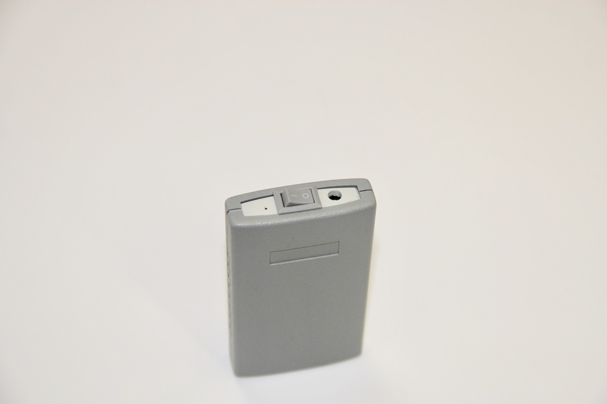
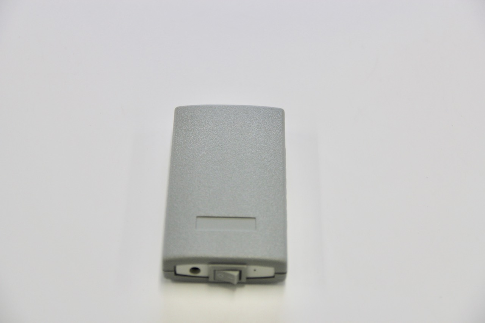
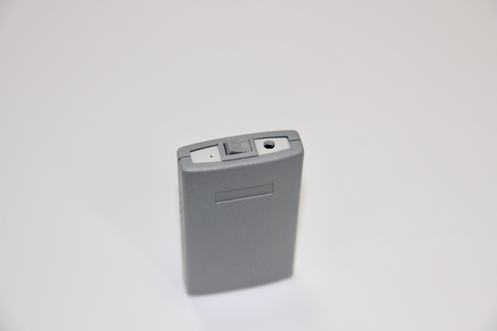
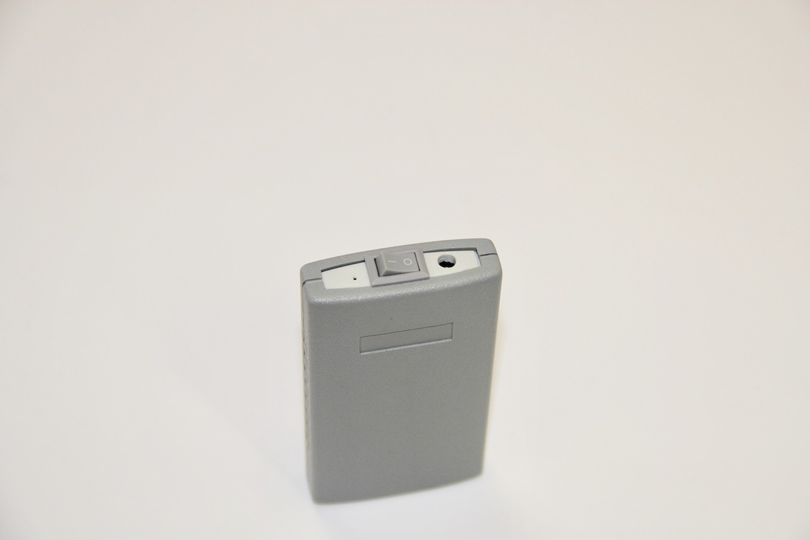
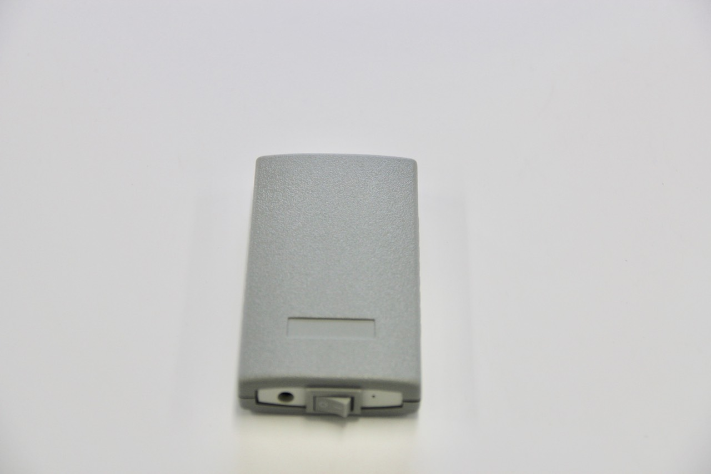
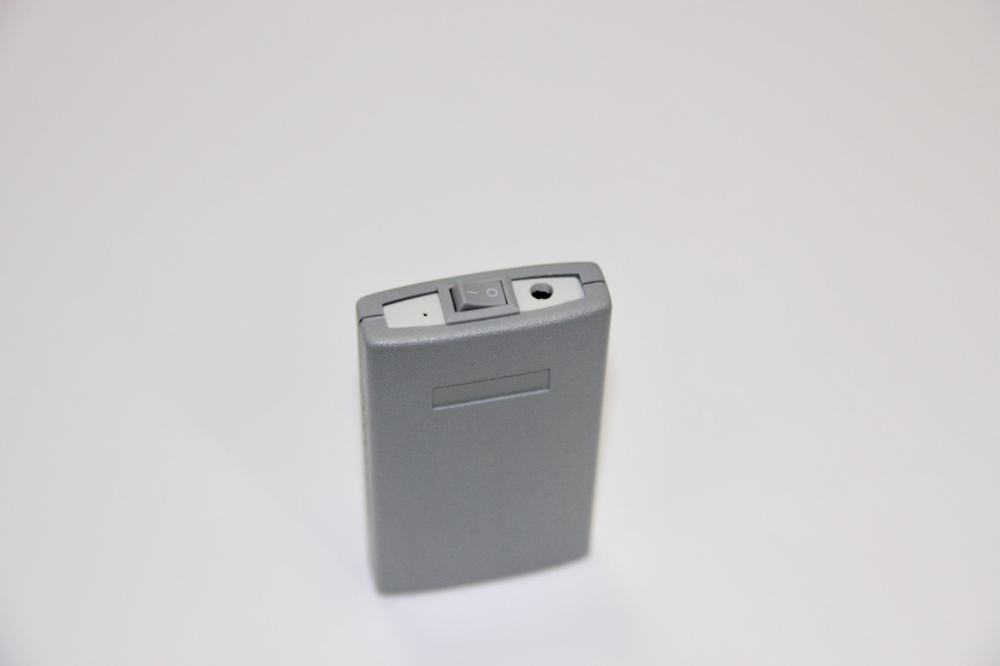

Destination
The purpose of the biocorrector is to protect the human body from energetically harmful radiation, for further protection from harmful radiation of different origin.
Structure
The structure of the biocorrector refers to electronic generators of pulsed and alternating voltage. Sinusoidal, alternating voltage is applied to unified radiator, which is placed inside of the biocorrector's body.
Function
The main function of this electronic device:
- Normalization of psychological balance
- Protection of person’s psychological condition, from a deliberate influence by another person from distance or from a technocratic device.
The main functional of the biocorrector is suitable for a large crowd of people. Malicious radiation can come not only from technogenic devices, but also from people. Arbitrarily or spontaneously. Inadequate human behavior can lead to difficult effects, which can make big problems, especially:
- Driving a car;
- Airplanes management;
- Military duty on sea crafts;
- Protection of the country border;
- Conducting of serious conversation, from which the fate of state depends on;
- Signing of important contracts;
- At places, where the life of person depends on the others people;
Technical features
| Powered from internal battery | 3.7 W |
| Frequency of radiation, mHz | 4.0 |
| Dynamics of radiation | Electromagnetic |
| Temperature of operating mode, deg | 0 - 50 |
| Dimensions of the device, mm | 50 x 90 x16 |
The operation procedure
- Connect the biocorrector to the charger;
- Switch on the biocorrector;
- Place the emitter close to the person;
- The device is ready for using.
The LED lamp on the emitter will turn to green light. Duration of biocorrector’s work is round-the-clock.
Kit
A charger is included in the biocorrector's kit. Charging time of internal battery is from 5 to 7 hours. Battery life time is from 3 to 5 days. The level of battery is showed during the process of using biocorrector.
When the battery is discharged, the green LED light should go out and do not respond on turning on and off the device. After charging the battery, the LED light will again turn into green.